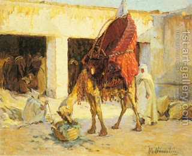

Bava Kamma 62 - Fire Accidents
If one sets fire to a large house, he pays for everything inside it. The house owner needs to take an oath about the value, and has to be reasonably expected to have such items.
One is liable for direct or immediate damages but not indirect or delayed ones.
If a camel laden with flax passed through the street and its flax protruded into a shop and was ignited by the shopkeeper's lamp and set fire to a large towner, the owner of the camel is liable; if the shopkeeper put his lamp outside, the shopkeeper is liable. Rabbi Yehuda says that for Hanukkah light he is not liable.